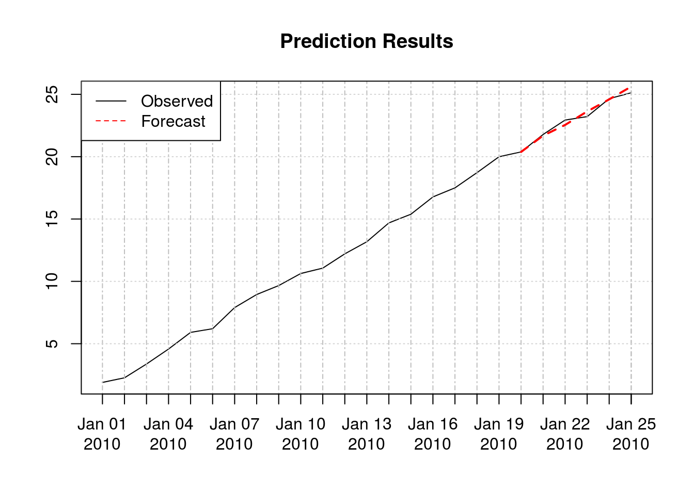
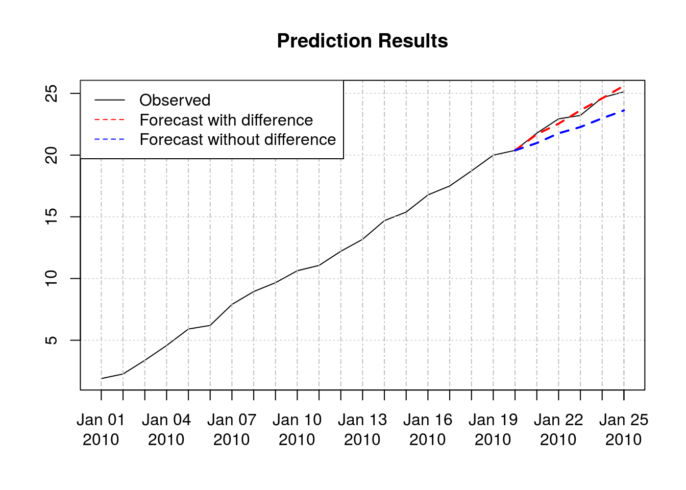

For the rest of this guide, we will use our own time-series:
library("xts")
library("mltsp")
n = 25
stamps <- seq(from = as.Date("2010-01-01"), to=as.Date("2010-01-25"), by = "day")
observed_data <- xts(as.numeric(1:n) + runif(n), stamps)Then we train on the first 20 values.
train_data <- head(observed_data, 20)timeDate is usually slow. Use Date or POSIXct whenever possible.
Every time-series prediction tool has three steps:
ndiffs function in package forecast with ‘kpss’ measure).We implement these using
pp <- list(list("diff", "auto"))
fx <- function(x) cbind(x, lag_windows(x, p=1))
ln <- SimpleLM
fcster <- mltsp_forecaster(pp, fx, ln)Now fcster can be used to forecast the series:
fcster(train_data, h=5)## [,1]
## 2010-01-21 21.68824
## 2010-01-22 22.54645
## 2010-01-23 23.62475
## 2010-01-24 24.59541
## 2010-01-25 25.61871
A forecast compatible model:
model <- mltsp(train_data, pp, fx, ln)and applying forecast to that model:
forecast(model, h=5)## [,1]
## 2010-01-21 21.68824
## 2010-01-22 22.54645
## 2010-01-23 23.62475
## 2010-01-24 24.59541
## 2010-01-25 25.61871One can simply reuse the same model with other data:
model2 <- mltsp(model, observed_data)Pre-processing parameter contains a list of pre-processing techniques to be applied consecutively. Each techniques itself is in form of list("techninque name", param1, param2, ...).
Available techniques include:
"diff": Differencing the time-series. Parameter can be an integer (the differencing order), “kpss”, “adf”, or “auto”."boxcox": Box-cox transform. Parameter can be a numeric lambda, or “auto”."log": Log transform. Only works if time-series is positive. No parameters."log_abs": Log transform on absolute value. Destroys values between -1 and 1. No parameters."log+min": Log transform on (x - min(x) + 1). No parameters.The above could have been replaced with:
fx <- function(x) lag_windows(x, p=1, no_peeking = FALSE)Here, no_peeking = FALSE allows the first column to be the observed data (i.e. zero lags), which will serve as the training target in the learning function.
Other options are:
lag_windows(x, p, P = 0, freq = 1, shift = 0, no_peeking = TRUE, pstr)centered_lag_windows(x, p = 1, pstr=deparse(substitute(x)))seasonal_lag_windows(x, P = 1, freq = frequency(x), width = 0, shift = 0, no_peeking = TRUE, pstr)The learner should take whatever comes out of feature extraction and create a model up on it. For example, using formulas if the name of the target column in feature extraction is known:
ln <- function(f) lm(x ~ ., f)Alternatively, one can use function that take a data.frame and consider the training target to be the first column, such as SimpleLM, or svm from package e1071.
To compare different models, we use cross validation (CV).
For example, consider the above model versus the one without first difference pre-processing:
fcster_nodiff <- mltsp_forecaster(NULL,
function(x) lag_windows(x, p=3, no_peeking = TRUE),
SimpleLM)CV using time-series slices are impelemted in ts_crossval. By default, rmse is used as the error measure. Parameters are: * horizon: Forecasting horizon to test the algorithm on * initial_window: How long should be the smallest window of data used for training. See documentation for more information.
Here, we have:
ts_crossval(train_data, fcster, horizon = 5, initial_window = 10)## [1] 2.694877ts_crossval(train_data, fcster_nodiff, horizon = 5, initial_window = 10)## [1] 13.06756The first one (i.e., using first difference) has a smaller CV error and is therefore better. Here is their out-of-sample forecast vs actual data: 
When using ts_crossval you don’t have to fully cross-validate to see if something is not as good as what you expect. For example, if CV error has surpased a naive algorithm, one can simply terminate the cross-validation process. This can be done by setting
break_errbreak_batch_errbreak_batch_sizeFor example, in the above example, first model has an accumulative CV error = 2.70, and CV is applied to 6 slices:
ts_crossval(train_data, fcster, horizon = 5, initial_window = 10, verbose = TRUE)## [1] "CV: 1 of 6 Err: 0.458098568928112"
## [1] "CV: 2 of 6 Err: 0.347115924471326"
## [1] "CV: 3 of 6 Err: 0.545312229495626"
## [1] "CV: 4 of 6 Err: 0.706615761722711"
## [1] "CV: 5 of 6 Err: 0.190170722457397"
## [1] "CV: 6 of 6 Err: 0.447563850135199"## [1] 2.694877So any model with CV error > 2.70 is worse than it. Let break_err = 2.7:
ts_crossval(train_data, fcster_nodiff, horizon = 5, initial_window = 10, break_err = 2.7, verbose = TRUE)## [1] "CV: 1 of 6 Err: 1.41358548236245"
## [1] "CV: 2 of 6 Err: 2.11831197319849"
## [1] "CV: Total error break: Err = 3.53189745556094"## [1] 3.531897CV terminates at the second slice, saving CV time of 4 slices.
The idea behind having a batch size is parallel processing. Many functions, including mclapply return once they have completed all computation. If this is used with break_err, checking for the break threshold happens only after all computation is done, and there is no use in aborting CV progress if everything is already calculated.
Consequenty, tscrossval is designed to allow one to select how much is given to mclapply in each batch. Selecting a large number results in more efficient parallel processing, but more coarse break error checking. A small number will result in higher parallel processing overheard.
For example,
library("parallel")
options(mc.cores=2)
system.time({
err <- ts_crossval(train_data, fcster_nodiff, horizon = 5, initial_window = 10, plapply = mclapply,
break_err = 3, verbose = TRUE)
})## Warning in ts_crossval(train_data, fcster_nodiff, horizon = 5,
## initial_window = 10, : Break error is given, but batch size is not.## [1] "CV: Total error break: Err = 13.0675619396307"## user system elapsed
## 0.031 0.020 0.055paste("Without batch-size Error was ", err)## [1] "Without batch-size Error was 13.0675619396307"Which is what we expect if all 6 cross-validations were done. Note that verbose doesn’t print its result when it is inside child processes, the fucntion warns that bacth size is not given.
In comparison, a batch of size two (to fill the two available cores):
system.time({
err <- ts_crossval(train_data, fcster_nodiff, horizon = 5, initial_window = 10, plapply = mclapply,
break_err = 3, break_batch_size = 2, verbose = TRUE)
})## [1] "CV: Total error break: Err = 3.53189745556094"## user system elapsed
## 0.085 0.043 0.043paste("Without batch-size, final error was ", err)## [1] "Without batch-size, final error was 3.53189745556094"This one also terminates sooner (compare elapsed values).